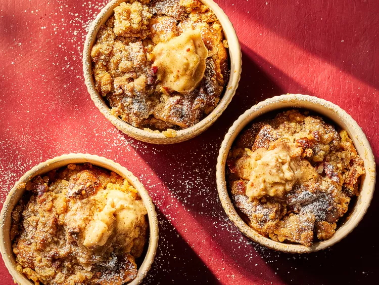

Individual Bourbon-Pecan French Toast Bakes

Ingredients
French Toast
- 1 cup whole milk
- 4 large eggs
- 2 tablespoons pure maple syrup
- 2 tablespoons Bourbon whiskey
- 1 teaspoon vanilla extract
- 5 1/2 teaspoons ground cinnamon
- 1/4 teaspoon salt
- 4 cups dry whole-grain or challah bread cubes (see From the Editor, below)
Toasted Pecan Butter
- 1/2 cup chopped pecans
- 1 cup butter, softened
- 1/4 cup packed light brown sugar
- 1 teaspoon vanilla extract
Directions
- Grease 4 (8 to 10 ounce) ramekins. Whisk together milk, eggs, maple syrup, bourbon, vanilla, cinnamon, and salt in a large bowl. Add bread. Toss to combine. Divide among prepared ramekins. Chill, covered, at least 2 hours or up to overnight.
- Meanwhile, make Toasted Pecan Butter: Preheat the oven to 325 degrees F (165 degrees C). Spread pecans on a rimmed baking sheet.
- Toast in the preheated oven, stirring once or twice, until lightly browned and fragrant, 12 to 15 minutes. Watch closely so they don’t burn. Let cool to room temperature.
- Pulse butter, brown sugar, and vanilla in a food processor until combined. Add cooled pecans. Pulse until mixture reaches desired consistency. Chill Toasted Pecan Butter in an airtight container up to 1 month.
- To assemble: Preheat the oven to 350 degrees F (175 degrees C). For streusel, stir together flour and brown sugar in a medium bowl. Cut in butter with a pastry blender or 2 knives until mixture resembles coarse crumbs; stir in pecans. Sprinkle streusel over bread mixture in ramekins.
- Bake in the preheated oven until puffed and a knife inserted into centers comes out clean, about 30 minutes. Serve warm with Toasted Pecan Butter and garnish with powdered sugar.